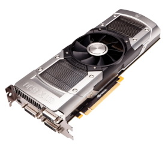
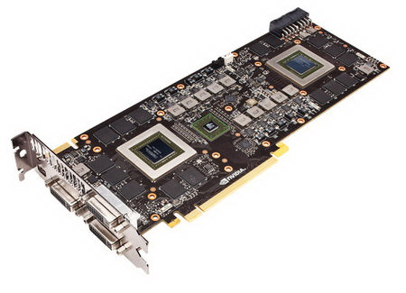

NVIDIA GeForce GTX 690

Видеокарта из ныне существующих является самой быстрой двухчиповой картой, она создана на базе GPU Kepler повышенной энергоэффективности. Каждому чипу отведено по 2 гигабайта видеопамяти GDDR5 при частоте 6008 МГц, которые соединяются с процессорами при помощи 256-битовой шины. Для дополнительного питания в карте предусмотрено два 8-контактных разъема.
Карта поддерживает и разъем SLI (если есть желание объединить две родственные видеокарты в режиме Quad SLI).

От видеокарт предыдущих версий отличается структурой потокового мультипроцессора, а архитектура Nvidia GPU Kepler (созданная практически с нуля) поддерживает DirectX 11.
Технология GPU Boost может отслеживать графическую нагрузку (также и температуру) и, при необходимости, увеличивать тактовую частоту (параметр может достигать 1019 МГц).
В карте предусмотрена работа Adaptive V-Sync,
которая устраняет разрывы изображения (обычно они начинаются при достаточно высокой частоте смены кадров).
Эта мощнейшая видеокарта дает возможность подключить дополнительно 4 монитора к игровому компьютеру. Если надо - то можно купить
игровой компьютер в Минске у нас на сайте.
Достигнута новая технология сглаживания: режимы FXAA и TXAA, причем первый режим можно включить прямо с Панели управления карты. Поддерживая технологию PhysX, эта карта дает очень динамичную и реалистическую графику.
Видеокарта создана для достижения максимальной производительности (также и в режиме разгона) и остается очень энергоэффективной (этот параметр в настоящее время становится крайне важным), потребляя меньше энергии,
чем ее предшественницы и выделяя меньшее количества тепла.
Следовательно, карта является менее шумной. Кулер у нее находится в специальном кожухе.
Читайте также:
AMD или INTEL ?
Параметры, имеющие особое значение при покупке видеокарт.
Сравнение видеокарт GeForce.
Следующая статья:
Сенсорный экран глазами пользователя.